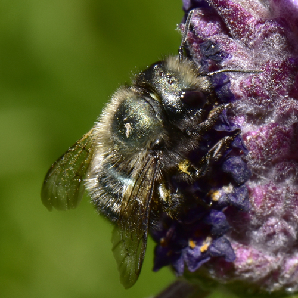
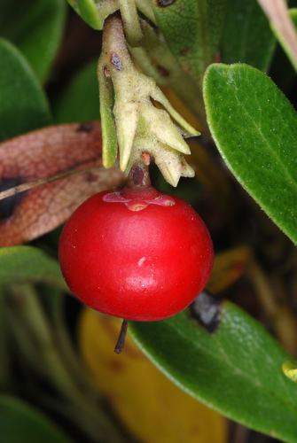
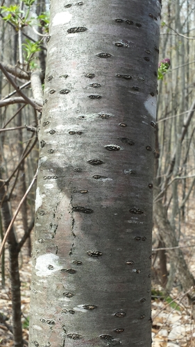
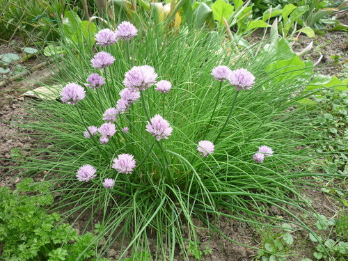
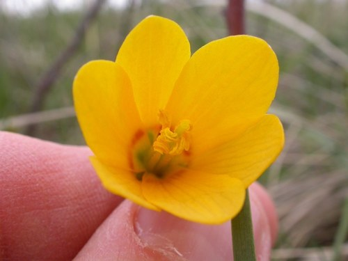

Blue Orchard Mason Bee
Osmia lignaria native bee

Spring solitary bee; superb fruit-tree and willow pollinator that nests in cavities (and bee hotels).
17 documented plant relationships.
sips nectar at
 Leslie Seaton, some rights reserved (CC BY)") BalsamrootBalsamorhiza sagittata
BalsamrootBalsamorhiza sagittata
BearberryArctostaphylos uva-ursi Douglas Goldman, some rights reserved (CC BY-SA), uploaded by Douglas Goldman") ChokecherryPrunus virginiana
ChokecherryPrunus virginiana peganum, some rights reserved (CC BY-SA)") Golden Currant (Buffalo Currant)Ribes aureumHeart-leaved ArnicaArnica cordifolia
Golden Currant (Buffalo Currant)Ribes aureumHeart-leaved ArnicaArnica cordifolia
Pin CherryPrunus pensylvanica Sam Kieschnick, some rights reserved (CC BY), uploaded by Sam Kieschnick") Saskatoon BerryAmelanchier alnifolia
Saskatoon BerryAmelanchier alnifolia
Wild ChivesAllium schoenoprasum
YellowbellsFritillaria pudica
 bobkennedy, some rights reserved (CC BY-SA), uploaded by bobkennedy")
 Gavin Slater, some rights reserved (CC BY), uploaded by Gavin Slater")
 Abby Hyde, some rights reserved (CC BY), uploaded by Abby Hyde")